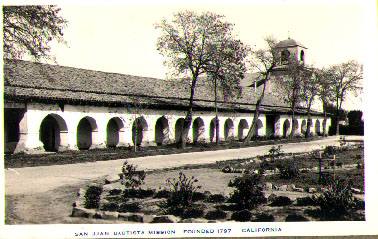
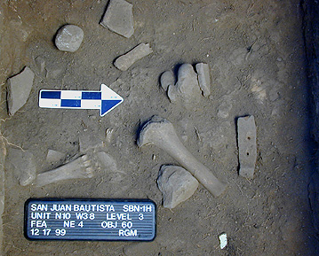

Summer Field Program in Archaeology: SBSM250s/350s,
July 3rd to July 28th, 2000
Summer 2000: Old Mission San Juan Bautista,
California
A Field School with Dr. Ruben Mendoza, Director of the Institute of Archaeology, CSU Monterey Bay
Have you ever wanted to do archaeology but didn’t know where to start? Are you an archaeology student who desires an authentic hands-on lab and field learning experience before you graduate? Or, do you have a desire to experience and discover California history for yourself? If your answer is yes to any of these questions, then this field school is for you!
Course Description
This course consists of a field school and a project-based learning lab in archaeology and archival research methods. Students will be introduced to the archaeology and history of the early California mission communities of the Central Coast by way of the Internet and hands-on study of archaeological and historical materials from Old Mission San Juan Bautista and related early missions. Having studied the lab methods by which archaeologists examine and identify the cultural importance of artifacts from a California mission, students will spend two weeks conducting excavations within the 200-year old courtyard of Mission San Juan Bautista. Final projects will be posted at the Institute’s web site located at http://archaeology.monterey.edu.
 Recent
findings from the Old Mission courtyard.
(Photo copyright Ruben G. Mendoza,
1999)
What is a Field School?
A field school is the hands-on lab and field portion of your training as an archaeologist. The field school experience serves to guide you through the process of survey, excavation, artifact and specimens analysis, the recording of data and observations, and finally, interpretation of that data. Your field experience will prepare you to conduct basic survey and mapping, photography, and the preparation of detailed journals regarding the results of your fieldwork. The lab portion of the field program will provide you direct access to the hands-on study and interpretation of Spanish colonial, Mexican, and early American period artifacts and specimens.
Where Will the Field School Take Place?
During the two-week portion of the project program, you will conduct excavations in the original courtyard of 200-year old Mission San Juan Bautista located in San Juan Bautista, California. San Juan Bautista is located in California’s central coast area just east of Hwy 101 on Hwy 156. The site lies approximately one-half hour north of CSU Monterey Bay.
About Dr. Ruben Mendoza
Dr. Ruben Mendoza is the Director of the Institute of Archaeology at CSU Monterey Bay and one of its founding faculty. He is the current President of the Association of Latina and Latino Anthropologists and a charter member on the board of directors of the California Missions Foundation. In addition, he has numerous publications — and multimedia projects — to his credit dealing with the California missions and Spanish colonial archaeology. His ongoing excavations at Mission San Juan Bautista (1995-present) have been instrumental in the understanding of this Mission’s colorful, yet often misunderstood, past. For further info please contact Dr. Mendoza at 831-582-3760, or by e-mail at ruben_mendoza@monterey.edu
Registration for the Field School
Registration for this field school may be completed online at the CSU Monterey Bay web site at http://dlee.monterey.edu, where you can download and complete the registration forms, or by way of snail mail by writing DLEE (CSUMB Distance Learning and Extended Education, 100 Campus Center, Seaside, CA 93955-8001) and asking for a copy of the DLEE Registration form, which may be returned by mail or via fax at: 831-582-3741. Academic fees for this field course are set at the standard rate of $114.00 per unit for a total of four credit hours. Matriculated (CSUMB) students should add $14 to that amount. Non-matriculated students (non-CSUMB students) should add $39.00 to the aforementioned registration fee.
CSU Monterey Bay
DLEE Registration Form
100 Campus Center
Seaside, CA 93955-8001
Fax: 831-582-3741
E-mail: dlee.monterey.edu